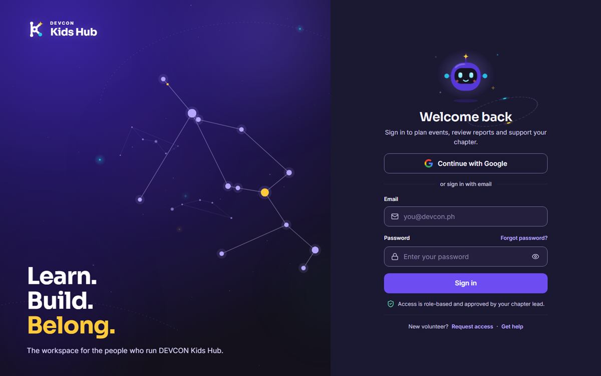

DEVCON Kids Hub 2.0
Centralized operations platform for DEVCON Kids. I led the team across architecture, delegation, backend, integration, and testing, and built role-based administration, volunteer management, event reporting, approval workflows, financial documentation, and AI-assisted knowledge retrieval.
React · Vite · Supabase · PostgreSQL · Google OAuth · pgvector · Edge Functions · Google Drive API · Recharts
Live demo of DEVCON Kids Hub 2.0 (opens in new tab) Source code of DEVCON Kids Hub 2.0 on GitHub (opens in new tab)